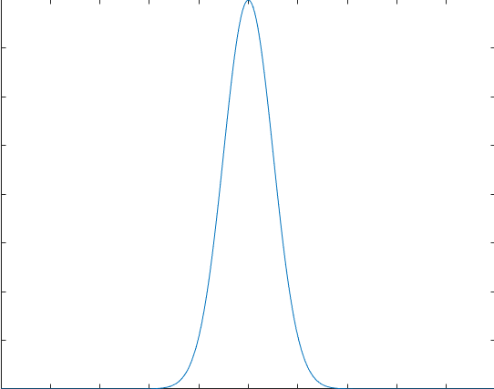

信号分类
分类一

分类二
定义：
信号平方函数：
W=T→∞lim=∫−TTf2(t)dt
平方可积空间：
L(R2)={f(t)∣W<∞}
平均功率：
P=T→∞lim=2T1∫−TTf2(t)dt
flowchart LR
Root[信号] --- L1A1[能量信号:<br>信号平方可积<br>即W为有限值] & L1A2[功率信号:<br>能量无穷但功率有限<br>即P为非零有限值] & L1A3[非功非能信号]
分类三
v
flowchart LR
Root[信号] --- L1A1[确定信号:<br>可以用有限个参量唯一性描述] & L1A2[随机信号:<br>通过统计学方法即概率密度函数描述]
L1A1 --- L2A1B1[非周期信号] & L2A1B2[周期信号]
L1A2 --- L2A2B1[非平稳信号:<br>分布规律随时间变化的信号] & L2A2B2[平稳信号:<br>分布规律不随时间变化的信号]
对于随机信号，我们是基于测得的样本序列通过统计学方法来对其进行分析。
傅里叶变换的缺陷
傅里叶变换：
f(t)=2π1∫−∞+∞f(t)e−iωtdt
可以发现，傅里叶变换得到的频谱包含了信号在整个时域的信息。
对于频率不随时间变化的信号，
比如f(t)=3+cos(30πt)+2cos(50πt),
对于大于等于最小周期的局部时域内的频谱都与其傅里叶变换得到的频谱相同；


1
2
3
4
5
6
7
8
9
10
11
12
13
14
15
16
17
18
19
| fs=300;
f1=15;
f2=25;
T=1;
n=round(T*fs);
t=linspace(0,T,n);
x = 3+cos(2*pi*f1*t) + 2.*cos(2*pi*f2*t);
figure(1);
plot(t,x);
xlabel("t/s")
grid on
X = fftshift(fft(x./(n)));
f=linspace(-fs/2,fs/2-1,n);
figure(2)
plot(f,abs(X));
xlabel("f/Hz")
ylabel("幅度")
grid on
|
但对于非平稳信号，比如f(t)=sin(50∗pi∗t2)
信号某局部时域的频谱与其傅里叶变换得到的频谱并不相同。


1
2
3
4
5
6
7
8
9
10
11
12
13
14
15
16
17
| fs=200;
T=1;
n=round(T*fs);
t=linspace(0,T,n);
x = cos(25*2*pi*t.^2);
figure(1);
plot(t,x);
xlabel("t/s")
grid on
X = fftshift(fft(x./(n)));
f=linspace(-fs/2,fs/2-1,n);
figure(2)
plot(f,abs(X));
xlabel("f/Hz")
ylabel("幅度")
grid on
|
在傅里叶变换中，由于其是直接对整个时域进行处理，如果一个信号只在某一时刻的一个小的范围内发生了变化，那么信号的整个频谱都要受到影响。我们无法从信号频域的变化反过来确定其在时域中发生变化位置和幅值。或者说，傅里叶变换没有很好的时-频分析能力。
短时傅里叶变换
1946年，D.Gabor提出了Gabor变换，为傅里叶变换引入了时域局部化的窗函数，经过发展成为了短时傅里叶变换STFT。
Gabor变换
记傅里叶变换为F[⋅]
对f(t)∈L(R2),
Gf(ω,τ)=F[f(t)ga(t−τ)]=2π1∫−∞+∞f(t)ga(t−τ)e−iωtdt
其中Gaussian函数ga(t)=2πa1e−4at2
a为大于0的固定常数。

从直观上看，Gabor变换就是将信号f(t)用Gaussian函数截取（通过τ确定截取区域中心，通过a确定截取区域的范围），然后进行傅里叶变换，从而达到提取信号局域信息的目的。
数学上可以证明，
F[f(t)]=∫−∞+∞Gf(ω,τ)dτ
即Gabor转换没有丢失信号信息，可以基于该变换重构回原信号。
窗函数与短时傅里叶变换
Gabor变换中的Gaussian函数也可以替换为其它函数，将此类用于截取原信号的函数称为时窗函数h(t)。
短时傅里叶变换STFT便是这类变换的统称，又可称为窗口傅里叶变换WFT：
STFTf(ω,τ)=F[f(t)h(t−τ)]=2π1∫−∞+∞f(t)h(t−τ)e−iωtdt
时窗函数通常为在有限时域外恒等于0或迅速趋于0的函数。（通常为紧支集实函数且其傅里叶变换能量集中在低频处，可看作一个低通滤波器的脉冲响应）。
短频傅里叶变换SFFT
上面只确定了信号局部时域到频域的映射，事实上，也可以实现局部频域到时域的映射，即基于局部频域，确定对应的时域位置。
若时窗函数h(t)的傅里叶变换H(ω)同样满足在有限频域外恒等于0或迅速趋于0，
记信号f(t)傅里叶变换为F(ω) ，则
SFFTF(t,ω)=∫−∞+∞F(Ω)H(ω−Ω)eiΩtdΩ
称H(ω)为频窗函数。
窗函数性质
对于一个窗函数h(t)<−>H(ω)，可以定义以下概念：
- 时窗中心：th(t)
- 时窗半径：Δth(t)
- 频窗中心：ωH(ω)
- 频窗半径：ΔωH(ω)
对应偏移后：h(t−τ)<−>H(ω−Ω)，有
- 时窗中心：th(t−τ)=th(t)+τ
- 时窗半径：Δth(t−τ)=Δth(t)
- 频窗中心：ωH(ω−Ω)=ωH(ω)+Ω
- 频窗半径：ΔωH(ω−Ω)=ΔωH(ω)

可以发现，对于确定的窗函数，其对应的时-频窗形状固定，
面积为2Δth(t)×ΔωH(ω)
而窗口越小，其时-频局域化描述能力越好。
对于Gabor变换，其面积为2。可以证明，Gabor变换已经达到最优大小。
在实际应用中，
为了提取高频分量，时窗应尽可能窄，而频窗应尽可能宽；
而提取低频分量需要时窗尽可能宽，而频窗尽可能窄。
短时傅里叶变换固定的窗口形状不能满足此需求。